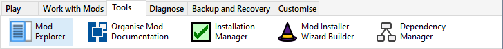

The Mod Explorer displays your Mods in a tabular format and provides extensive filtering operations.

Press Ctrl+E or click Mod Explorer from the Tools menu.

Click the Select button to close the Mod Explorer and select the Explorer highlighted Mod in the Installer Tool's Mod list.
Use Filter Boxes to specify filtering criteria
How can I see which Mods I have not played for a long time?